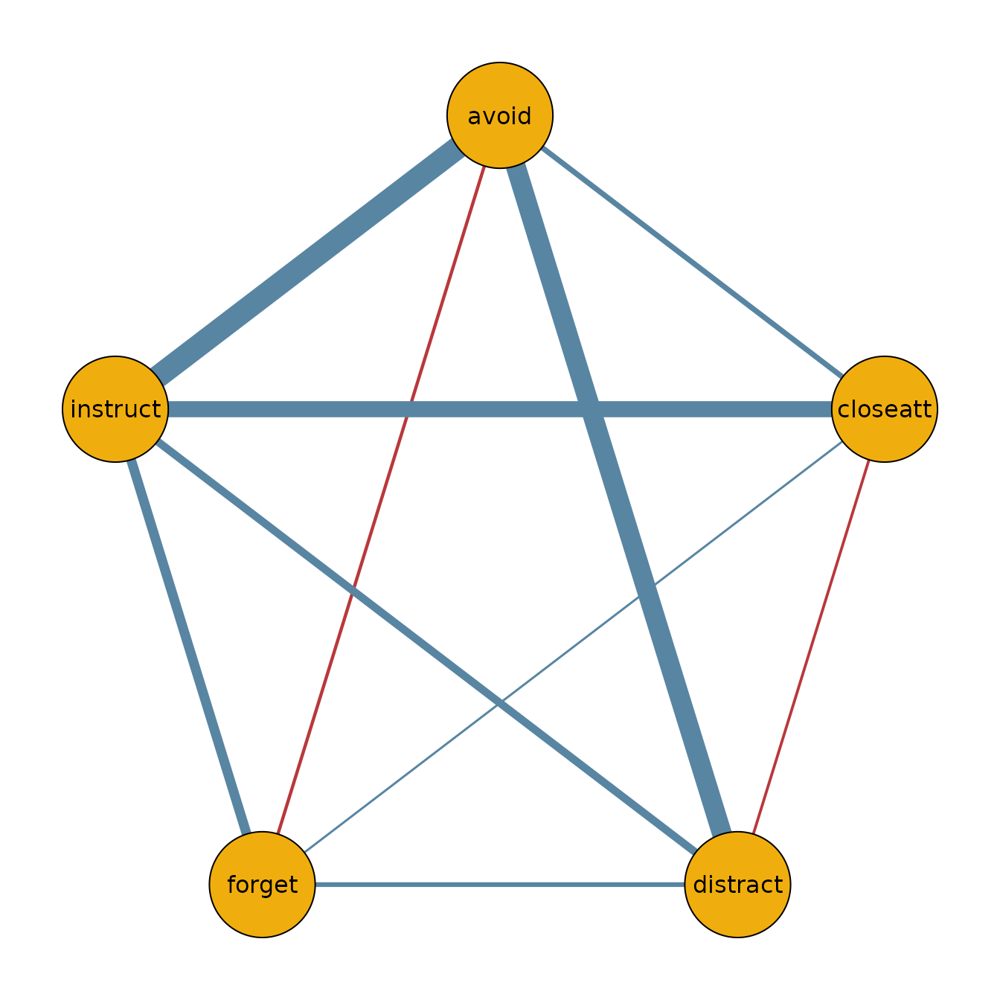

Introduction
The function bgmCompare() extends bgm() to
independent-sample designs. It estimates whether edge weights and
category thresholds differ across groups in an ordinal Markov random
field (MRF).
Posterior inclusion probabilities indicate how plausible it is that a group difference exists in a given parameter. These can be converted to Bayes factors for hypothesis testing.
Fitting a model
fit = bgmCompare(x = data_adhd, y = data_no_adhd, seed = 1234)Posterior summaries
The summary shows both baseline effects and group differences:
summary(fit)
#> Posterior summaries from Bayesian grouped MRF estimation (bgmCompare):
#>
#> Category thresholds:
#> parameter mean mcse sd n_eff Rhat
#> 1 avoid (1) -2.594 0.006 0.369 3904.974 1.000
#> 2 closeatt (1) -2.231 0.006 0.358 4153.680 1.001
#> 3 distract (1) -0.438 0.006 0.321 2504.279 1.000
#> 4 forget (1) -1.546 0.005 0.314 4216.099 1.000
#> 5 instruct (1) -2.318 0.008 0.394 2542.043 1.000
#>
#> Pairwise interactions:
#> parameter mean mcse sd n_eff Rhat
#> 1 avoid-closeatt 0.824 0.010 0.451 2211.995 1.001
#> 2 avoid-distract 1.642 0.005 0.353 4490.559 1.000
#> 3 avoid-forget 0.474 0.007 0.360 2725.903 1.000
#> 4 avoid-instruct 0.365 0.007 0.422 3365.540 1.001
#> 5 closeatt-distract -0.180 0.006 0.358 4141.167 1.001
#> 6 closeatt-forget 0.134 0.004 0.280 4026.262 1.001
#> ... (use `summary(fit)$pairwise` to see full output)
#>
#> Inclusion probabilities:
#> parameter mean mcse sd n0->0 n0->1 n1->0 n1->1
#> avoid (main) 1.000 0.000 0 0 0 3999
#> avoid-closeatt (pairwise) 0.713 0.013 0.453 757 393 393 2456
#> avoid-distract (pairwise) 0.400 0.008 0.490 1497 905 905 692
#> avoid-forget (pairwise) 0.828 0.011 0.377 437 251 251 3060
#> avoid-instruct (pairwise) 0.997 0.001 0.052 5 6 6 3982
#> closeatt (main) 1.000 0.000 0 0 0 3999
#> n_eff_mixt Rhat
#>
#> 1262.058 1
#> 3571.863 1
#> 1130.288 1.004
#> 1505.695 1.004
#>
#> ... (use `summary(fit)$indicator` to see full output)
#> Note: NA values are suppressed in the print table. They occur when an indicator
#> was constant or had fewer than 5 transitions, so n_eff_mixt is unreliable;
#> `summary(fit)$indicator` still contains all computed values.
#>
#> Group differences (main effects):
#> parameter mean mcse sd n_eff n_eff_mixt Rhat
#> avoid (diff1; 1) -2.536 0.720 3215.273 1.000
#> closeatt (diff1; 1) -2.947 0.715 3515.888 1.000
#> distract (diff1; 1) -2.620 0.656 2188.558 1.002
#> forget (diff1; 1) -2.869 0.647 2976.872 1.000
#> instruct (diff1; 1) -2.451 0.870 1786.664 1.000
#> Note: NA values are suppressed in the print table. They occur here when an
#> indicator was zero across all iterations, so mcse/n_eff/n_eff_mixt/Rhat are undefined;
#> `summary(fit)$main_diff` still contains the NA values.
#>
#> Group differences (pairwise effects):
#> parameter mean mcse sd n_eff n_eff_mixt
#> avoid-closeatt (diff1) 1.001 0.021 0.867 1567.759 1656.744
#> avoid-distract (diff1) 0.212 0.007 0.349 2987.491 2466.120
#> avoid-forget (diff1) 1.212 0.019 0.806 1706.692 1738.038
#> avoid-instruct (diff1) -2.791 0.018 0.957 2732.896 2807.830
#> closeatt-distract (diff1) -0.148 0.008 0.305 2838.680 1542.273
#> closeatt-forget (diff1) 0.158 0.007 0.309 2836.020 1810.940
#> Rhat
#> 1.000
#> 1.000
#> 1.000
#> 1.002
#> 1.000
#> 1.009
#> ... (use `summary(fit)$pairwise_diff` to see full output)
#> Note: NA values are suppressed in the print table. They occur here when an
#> indicator was zero across all iterations, so mcse/n_eff/n_eff_mixt/Rhat are undefined;
#> `summary(fit)$pairwise_diff` still contains the NA values.
#>
#> Use `summary(fit)$<component>` to access full results.
#> See the `easybgm` package for other summary and plotting tools.You can extract posterior means and inclusion probabilities:
coef(fit)
#> $main_effects_raw
#> baseline diff1
#> avoid(c1) -2.5938427 -2.536236
#> closeatt(c1) -2.2314062 -2.947048
#> distract(c1) -0.4376243 -2.619701
#> forget(c1) -1.5461688 -2.868977
#> instruct(c1) -2.3179644 -2.450688
#>
#> $pairwise_effects_raw
#> baseline diff1
#> avoid-closeatt 0.8235010 1.0011702
#> avoid-distract 1.6421831 0.2116882
#> avoid-forget 0.4739962 1.2119262
#> avoid-instruct 0.3651010 -2.7912009
#> closeatt-distract -0.1801949 -0.1475133
#> closeatt-forget 0.1336782 0.1583270
#> closeatt-instruct 1.4962870 0.5472581
#> distract-forget 0.3727393 0.2242070
#> distract-instruct 1.1876278 1.3106551
#> forget-instruct 1.0735725 0.7942729
#>
#> $main_effects_groups
#> group1 group2
#> avoid(c1) -1.3257244 -3.861961
#> closeatt(c1) -0.7578823 -3.704930
#> distract(c1) 0.8722263 -1.747475
#> forget(c1) -0.1116801 -2.980657
#> instruct(c1) -1.0926202 -3.543309
#>
#> $pairwise_effects_groups
#> group1 group2
#> avoid-closeatt 0.32291585 1.3240861
#> avoid-distract 1.53633900 1.7480272
#> avoid-forget -0.13196684 1.0799593
#> avoid-instruct 1.76070148 -1.0304994
#> closeatt-distract -0.10643820 -0.2539515
#> closeatt-forget 0.05451476 0.2128417
#> closeatt-instruct 1.22265789 1.7699160
#> distract-forget 0.26063585 0.4848428
#> distract-instruct 0.53230029 1.8429554
#> forget-instruct 0.67643605 1.4707089
#>
#> $indicators
#> avoid closeatt distract forget instruct
#> avoid 1.00000 0.71250 0.39950 0.82800 0.99725
#> closeatt 0.71250 1.00000 0.35275 0.36950 0.56550
#> distract 0.39950 0.35275 1.00000 0.40025 0.87125
#> forget 0.82800 0.36950 0.40025 1.00000 0.71600
#> instruct 0.99725 0.56550 0.87125 0.71600 1.00000Visualizing group networks
We can use the output to plot the network for the ADHD group:
library(qgraph)
adhd_network = matrix(0, 5, 5)
adhd_network[lower.tri(adhd_network)] = coef(fit)$pairwise_effects_groups[, 1]
adhd_network = adhd_network + t(adhd_network)
colnames(adhd_network) = colnames(data_adhd)
rownames(adhd_network) = colnames(data_adhd)
qgraph(adhd_network,
theme = "TeamFortress",
maximum = 1,
fade = FALSE,
color = c("#f0ae0e"), vsize = 10, repulsion = .9,
label.cex = 1, label.scale = "FALSE",
labels = colnames(data_adhd)
)